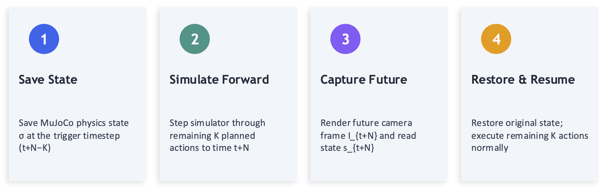
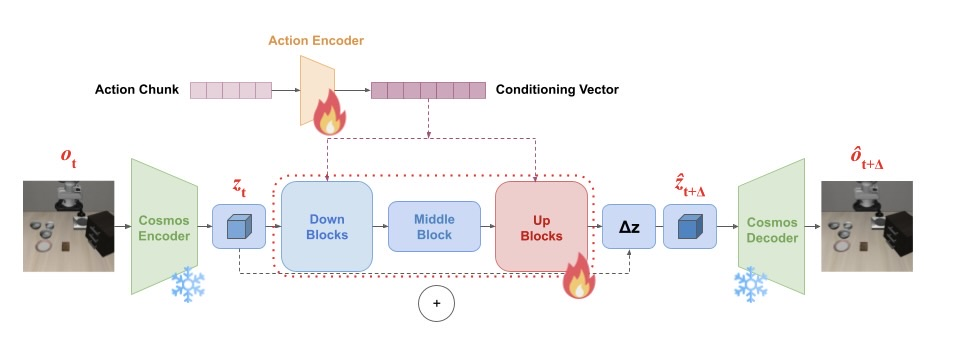

DreamActVLA: Temporally Aligned Asynchronous Inference for Vision-Language-Action Models
Can asynchronous inference work without any modifications to the VLA fine-tuning process?
What is New Here?
- VLA policies are slow to run (~120ms per inference call), forcing the robot to idle between action chunks.
- We implement a system called DreamActVLA that rolls both the image and state forward to the same future timestep, keeping the input in-distribution with zero changes to VLA fine-tuning process.
- Result on LIBERO shows 92.5% success rate (vs 93.5% sync) with a 15% speedup in execution time.
- Additionally, we develop a set of "dynamic" evaluation tasks in LIBERO and evaluate whether applying Asynchronous Inference technique helps improve the policy performance on dynamic tasks.
Introduction
Vision-language-action (VLA) policies used for controlling robots are typically deployed with synchronous execution. If you watch demo videos from papers like π0, π0.5, or OpenVLA, you'll notice that the robot's motion is a series of movements with short pauses in between. Those pauses are the robot running inference — basically thinking about what to do next. While it's thinking, the robot either idles or blindly executes stale commands while the next plan is being computed. That's a problem, especially if anything in the scene is moving.
The obvious fix is to use asynchronous inference, where we start computing the next action chunk while the robot is still executing the current one. However, this creates a sneaky problem: by the time inference finishes, the observation that triggered it is stale.
Existing works have taken different approaches to fix this. RTC uses an inpainting-style procedure that blends the new action chunk with the old one — great for action continuity, but the policy is still looking at a stale camera frame. VLASH goes further and rolls the robot's joint state forward to the future timestep, but leaves the image stale. So the policy sees a future robot state paired with a past camera frame, a combination it never saw during training. To make this work, VLASH needs a special fine-tuning procedure with temporal offsets baked in; this is doable, but it adds cost and complexity. F2F-AP takes yet another angle and predicts optical flow by overlaying the flow vectors onto the current frame as a visual hint of future state. However but the policy must be trained from scratch to consume these flow-augmented inputs, and without action conditioning the flow can only estimate where objects drifted, not where the robot's embodiment actually went.
And then there's WAM, which treated the world model as the policy and fine-tuned a 14B video diffusion model (Wan2.1-I2V) to jointly denoise future frames and actions simultaneously via separate decoders. This is impressive, but that 14B model is itself the reason you needed async inference in the first place.
| Method | Fixes image staleness | Action-conditioned | No VLA retraining |
|---|---|---|---|
| RTC | ✗ | — | ✓ |
| VLASH | ✗ | — | ✗ |
| F2F-AP | ✓ | ✗ | ✗ |
| WAM | ✓ | ✓ | ✗ (replaces VLA) |
| DreamActVLA (Ours) | ✓ | ✓ | ✓ |
This got us thinking: what if the answer was simpler?
The real problem isn't asynchrony — it's the partial roll-forward. Move the state forward but leave the image behind, and you've created a mismatch the policy has never seen. But roll both forward to the same future instant, and the policy gets a perfectly consistent $(I_{t+\Delta}, s_{t+\Delta})$ pair — exactly what it was trained on. No distribution shift. No re-training. The policy doesn't even know it's running asynchronously.
Key Insight: Temporal alignment is the missing ingredient. Roll both the image and the state forward to the same future timestep, and async inference becomes indistinguishable from sync — no fine-tuning changes required.
We validated this in three steps: first with a privileged simulator peek (MuJoCo snapshot/restore) as a proof of concept, then with a learned latent world model that works without the simulator, and finally on a dynamic LIBERO variant where latency actually hurts. The result: 94.2% average success across all four LIBERO suites vs. 96.8% sync oracle — a gap of just 2.6 points, while the no-WM async baseline collapses to 67.3%.
Contributions
- More accurate asynchronous inference: By querying a policy with temporally aligned future $[\text{image, state}]$ observations, DreamActVLA achieves asynchronous inference without any adjustment to the fine-tuning process — a strictly more accurate approach than prior methods like RTC and VLASH that rely on temporally disjoint inputs or offset-aware training.
- World model generalization: Using a learned world model (COSMOS) to generate future observations removes the simulator dependency and enables real-robot deployment.
- Dynamic task benchmark: A new LIBERO benchmark variant with wall-clock-tied object motion where asynchronous methods offer a clear advantage.
How we Implemented our approach
Privileged Future Observations
Let $o_t = (I_t, s_t)$ denote the full observation at timestep $t$, where $I_t \in \mathbb{R}^{H \times W \times 3}$ is the rendered camera frame and $s_t \in \mathbb{R}^{8}$ is the proprioceptive state vector (end-effector position, axis-angle orientation, and gripper aperture).
Given a current action chunk $a = [a_t, \ldots, a_{t+N-1}]$ of length $N$, we trigger asynchronous inference $K$ steps before the chunk ends, at step $t + N - K$.
At the trigger point, rather than using the current (stale) observation, we obtain a future observation $o_{t+N}$ by performing a brief rollout within the simulator:

The four-step privileged rollout procedure. Both the image and state are captured from the same simulated future instant, ensuring temporal alignment.
The next action chunk is then computed as $\pi(o_{t+N})$ and is ready at the chunk boundary $t+N$ when the robot needs it. Because both $I_{t+N}$ and $s_{t+N}$ are drawn from the same simulated future instant, the observation pair is temporally aligned — it lies on the same distribution as the training data.
Why this is more accurate: Training data always pairs contemporaneous images and states. Prior approaches like VLASH break this pairing by only rolling forward the state, producing out-of-distribution inputs. DreamActVLA preserves the original pairing by aligning both modalities to the same future instant — no modified fine-tuning needed.
World Model Generalization
The privileged rollout trick only works in simulation. On a real robot there is no MuJoCo state to save and restore, so we need a learned model that can predict the future frame from the stale observation and the planned actions alone.
Rather than training a full pixel-space video diffusion model — which would be slow and expensive — we build on the frozen Cosmos VAE as a compact visual representation and train a lightweight latent dynamics predictor on top of it. The key insight is that future-frame prediction is much easier in latent space than in pixel space, and the Cosmos encoder already captures the visual structure we care about.

Our latent dynamics predictor. The Cosmos encoder and decoder are frozen (❄️). Only the action encoder and the U-Net up-blocks are trained (🔥). The U-Net predicts a residual $\Delta z$ rather than the full future latent, making training faster and more stable.
Concretely, the pipeline has four stages:
- Encode: The frozen Cosmos encoder maps the stale camera frame $I_t \in \mathbb{R}^{H \times W \times 3}$ to a compact latent $z_t \in \mathbb{R}^{16 \times 28 \times 28}$.
- Condition: A small trainable action encoder compresses the action chunk $A_t = [a_t, \ldots, a_{t+\Delta-1}]$ into a fixed-size conditioning vector that is broadcast into every U-Net layer via cross-attention.
- Predict: A trainable U-Net (frozen down-blocks, trained up-blocks) processes $z_t$ conditioned on the action encoding and outputs a residual $\Delta z$. The predicted future latent is $\hat{z}_{t+\Delta} = z_t + \Delta z$.
- Decode: The frozen Cosmos decoder maps $\hat{z}_{t+\Delta}$ back to pixel space, producing $\hat{o}_{t+\Delta}$ — the predicted future observation the VLA will act on.
During training we supervise $\hat{z}_{t+\Delta}$ against the ground-truth future latent (obtained by encoding the privileged future frame from the simulator). At inference no simulator access is needed: the model takes only the stale frame and the committed action chunk and produces the corrected observation in one forward pass.
Why residual prediction? In manipulation tasks most of the scene — the table, the background, lighting — does not change between $t$ and $t+\Delta$. Predicting only what changes ($\Delta z$) is a much simpler regression target than predicting the full future latent from scratch, and it keeps the model compact enough to run in real time alongside policy inference.
One Principle, Two Estimators
Working through these experiments forced us to a cleaner way of seeing the whole async-VLA landscape. Every fix for inference latency (e.g. ours, RTC's, VLASH's) is secretly enforcing the same rule:
The action executed at time $t$ must be conditioned on an estimate of the world at time $t$: $\;A_t = \pi(\hat{o}_t)$. The methods differ only in where the estimate of the present comes from.
There are exactly two places to get it:
The implicit estimator: just skip the stale actions. A chunk planned from an observation $\delta$ steps old contains actions targeting times $[t{-}\delta, t{-}\delta{+}1, \dots]$, so its $\delta$-th action is the policy's own intrnal forecast of the right action for now. Discard the first $\delta$ actions, execute from index $\delta$, and execution is back on schedule. Zero compute, zero training, just five lines of code. This is the base scheme real-time chunking builds on, and we evaluate it as a first-class baseline, something async-VLA papers (including the ones above) rarely report on its own. Spoiler: it is much stronger than naive async, and you should be suspicious of any latency method that doesn't compare against it 😲
However, the forecast lives inside the chunk. This imposes three particular limits: it wastes $\delta$ of every 10 generated actions; on a single inference stream it needs the surviving actions to cover the next inference window, capping deployability at $\delta \le 5$ (250 ms for a 10-action chunk at 20 Hz); and the forecast is frozen at what the policy saw $\delta$ steps ago, meaning independently moving objects are invisible to it.
The explicit estimator: synthesize the present. This is our DreamActVLA: predict the current observation with the world model, query the unmodified policy, execute from the chunk head. All 10 actions usable, one inference per chunk, no ceiling on $\delta$. And because the estimate lives in observation space, it is the only form that could ever incorporate scene motion the policy hasn't seen.
The static experiments above can't separate these two: when only the robot moves, any self-motion correction looks sufficient. That's exactly why we built the dynamic benchmark.
Dynamic Tasks
The privileged and world-model conditions above both use the standard (static) LIBERO suites, where objects sit still until the robot interacts with them — inference latency costs time, but it rarely changes what the right action is. To test whether temporal alignment matters when the world itself keeps moving during inference, we built a dynamic LIBERO variant in which goal-relevant objects slide across the table at constant velocity. A policy acting on a stale observation is aiming at where the object was, not where it is — exactly the regime where temporally aligned observations should matter most.
Getting this benchmark right took several design iterations:
- Sim-time drift, not wall-clock. Objects move a fixed distance per control step (e.g. 0.4 mm/step ≈ 0.8 cm/s), and are decoupled from how long the evaluation harness happens to compute. Every method faces identical physics; latency is modeled explicitly by a delay parameter $\delta$ (in 50 ms control steps). An earlier wall-clock version silently punished whichever condition ran slowest on our GPU, an unfortunate contamination we only caught by comparing per-episode wall-times.
- Goal-scoped drift. So only objects named in the task's goal predicates move. Drifting every free object shoves items off shelves and buries the workspace in clutter — the scene self-destructs rather than perturbs.
- Predicate freezing. Objects stop drifting once their goal predicate is satisfied. Without this, multi-stage tasks are unwinnable: the first delivered item slides back out of the basket while the robot fetches the second, and even a zero-latency oracle scores 0%.
- Well-posedness criteria. Tasks whose goals are defined by spatial relations ("the bowl next to the ramekin") are excluded as drift invalidates the instruction itself. The drift rates are calibrated so a zero-latency oracle retains meaningful success (~50–75%), keeping the benchmark discriminative rather than saturated at either end.
Does Our Approach Actually Work?
Privileged Future Observations
Experimental Setup
We evaluate on the LIBERO benchmark, which comprises multiple manipulation task suites. Each condition is evaluated over 50 rollouts per task. All conditions use the π0-LIBERO checkpoint without any modification or further fine-tuning procedure.
Key parameters:
- Chunk length: $N = 15$ actions
- Overlap: $K = 10$ steps for the asynchronous condition
- Inference window: $K/f = 0.5\text{s}$ at the LIBERO control frequency of $f = 20\text{ Hz}$
- Hardware: NVIDIA RTX 4070 GPU (measured inference latency $\tau \approx 120\text{ ms}$)
The same chunk length $N$ is used across all conditions, so differences in success rate and completion time reflect the inference strategy alone.
Time to success is computed as:
$$T = N_{\text{steps}} / f + T_{\text{block}}$$
where $T_{\text{block}}$ is the total execution time lost to blocking inference pauses (zero for DreamActVLA when inference completes within the overlap window).
Main Results
| Method | Spatial | Object | Goal | L-10 | Avg SR (%) | Steps | Time (s) | ΔSR | Speedup |
|---|---|---|---|---|---|---|---|---|---|
| Sync (Baseline) | 92.6 | 99.2 | 95.6 | 86.6 | 93.5 | 153.1 | 9.02 | — | — |
| DreamActVLA (Ours) | 91.4 | 98.2 | 95.0 | 84.8 | 92.5 | 152.2 | 7.61 | −1.0% | 1.17× |
| Future-State Only | 12.8 | 26.6 | 52.4 | 19.2 | 27.6 | 228.8 | 11.35 | −65.9% | −25.8% |
DreamActVLA maintains 92.5% success rate (only a 1% reduction relative to Sync) while reducing mean task completion time to 7.61 s — a 1.17× speedup. This speedup stems directly from eliminating blocking inference pauses: inference runs concurrently with the final $K=10$ steps of each chunk and, at a measured latency of $\tau \approx 120\text{ ms}$, completes well within the available $K/f = 500\text{ ms}$ window.
Future-State-Only Ablation
We also tested a future-state-only condition, so by rolling forward just the state while keeping the current camera image. This is essentially what VLASH does at inference time, but applied to a stock π0 checkpoint without any offset fine-tuning. Look at the last row in the table above.
Here the Task Success Rate falls to 27.6%, whcih is a 65.9% drop. The policy simply can't handle the mismatched input. This is exactly the failure mode that motivated DreamActVLA: if you're going to roll forward, roll forward everything. Align both modalities and the policy doesn't even notice it's running asynchronously.
Note: The future-state-only result mirrors the observation pair used by VLASH at inference time, but applied to a standard π0-LIBERO checkpoint without temporal offset fine-tuning. VLASH's fine-tuning procedure is specifically designed to handle this disjoint input — but at the cost of additional training complexity.
World Model Generalization
Dynamic Tasks
Discussion
Limitations
Conclusion
We have shown that temporally aligned future observations enable more accurate asynchronous inference for VLA policies without any modification to the fine-tuning procedure. By rolling forward both the image and proprioceptive state to the same future timestep, DreamActVLA keeps policy inputs in-distribution and achieves a 1.17× speedup with negligible impact on task success — a strictly more accurate approach than existing methods like RTC and VLASH.
Our approach opens two directions for future work: (1) deploying DreamActVLA on physical robots using learned world models such as COSMOS, and (2) extending the dynamic task benchmark to evaluate robustness under varying object velocities and more complex scene dynamics.
Project Code
The implementation code for this project is available at github.com/dream-act-vla/PLACEHOLDER.